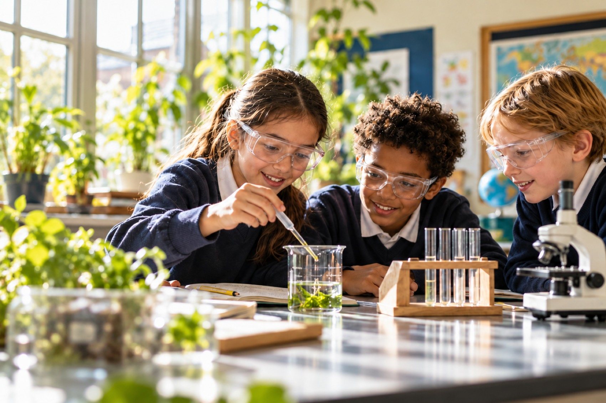
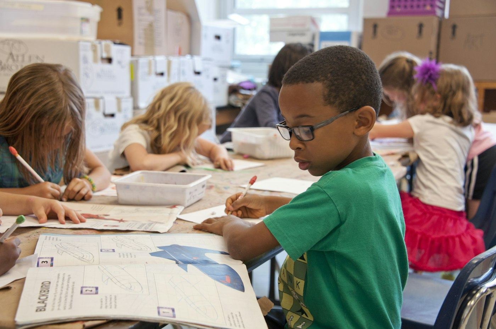
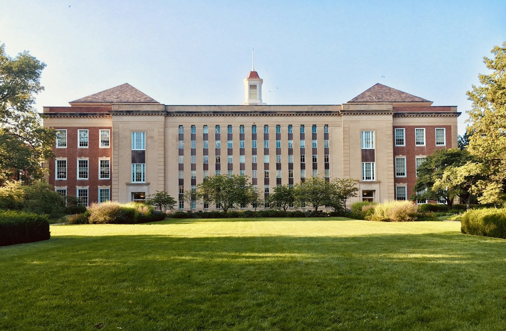

Ages 3–5
Early Years
Nursery and Reception
Learning through play, stories, talk and the outdoors.
Co-educational day school · ages 3–14
Cedar is a day school for children aged 3 to 14. Our classrooms are built around the questions children actually ask, and the patience to follow them properly.

Testing whether pond plants grow faster in the light or in the shade. The class wrote the question; the results are still coming in.
Illustrative image, not Cedar pupils.Campus address and academic-year dates will appear here once the school has verified them.
Choose your child's stage to see how learning is organised, what is taught and what we hope each child can do by the end of it.
Ages 3–5
Nursery and Reception
Learning through play, stories, talk and the outdoors.
Ages 5–8
Years 1–3
Secure reading, writing and number, taught with care.
Ages 8–11
Years 4–6
Deeper subject knowledge and growing independence.
Ages 11–14
Years 7–9
Subject specialists, real projects and preparation for what comes next.
Ordinary days are the best evidence of what a school is like. These photographs are illustrative stock images, chosen to show the kind of learning Cedar is built around.
Each day starts on the carpet with one question on the board. Today: "Can a shadow ever be in front of you?"
Early Years spend part of every day outside, in all weathers, with waterproofs kept at school.
Middle Years science happens in a dedicated lab with proper glassware and safety routines.
Library time is timetabled for every class, and the room stays open before school and at lunch.
Children share materials and talk through their designs before anything is stuck down.
Instruments are kept in a practice room pupils can book; music clubs run after school.
PE twice a week for every class, with football, athletics and games on the field.
Lunchtime clubs are chosen by pupils each term: book club, chess, gardening and choir are typical.
Applying to a new school should feel straightforward. Here is the full process, what to bring, and what we can and cannot confirm yet.
Dates for the next intake have not been confirmed. You can enquire now; we will share dates as soon as they are set.
There is no online application portal. Applications begin with an enquiry, and the application form is sent to you after your visit.
Tell us a little about your child and what you would like to know. This demonstration saves your draft in this browser and does not send a message.
Demonstration only. Nothing you enter leaves this browser.

Good learning needs secure knowledge, time to wonder and adults who notice. Our approach is deliberately simple, so parents can see it working on any ordinary day.
Children can only ask good questions about things they know something about, so core knowledge is taught clearly and revisited often.
In practice: Before Year 3 design their own bridges, they learn about arches, beams and forces, and test each one.
Pupils explain their thinking out loud before they write it down. Explaining exposes gaps and builds vocabulary.
In practice: Every maths lesson ends with two pupils explaining a solution to the class: one that worked and one that nearly did.
Teachers plan for the children in front of them, not a generic class. Small groups make that possible.
In practice: A weekly ten-minute reading conference with every child in Lower Primary, written up in their reading record.
Children take more care when someone will read, hear or use what they make.
In practice: The Middle Years biodiversity survey is presented to families and used to plan the school garden.
Select a place on the plan to see it and read how to get there. The plan is illustrative and not to scale.
Illustrative plan, not to scale.

Reception, the admissions office and the school hall. All visits start here.
Step-free main entrance with a ramp and automatic door. Accessible toilet beside reception.
Facilities and access notes describe a demonstration school. Please ask about specific access needs before a visit.
Practical answers for current and joining families.
| Doors open | 08:20 |
|---|---|
| Registration | 08:40 |
| Early Years finish | 14:45 |
| Primary and Middle Years finish | 15:30 |
| After-school clubs | Until 16:30, Monday to Thursday |
Sample timings for illustration.
No. Cedar is a fictional demonstration school. No real admissions intake, accreditation, results or fees are claimed.
They have not been published for this demonstration. A real school would add verified fees, dates and an address before launch.
Yes. A visit during a normal school day is step two of the admissions journey, and the enquiry form lets you choose a campus visit or an introductory call.
Tell us in your enquiry. We would discuss support with you before the settling-in session so the morning goes well.